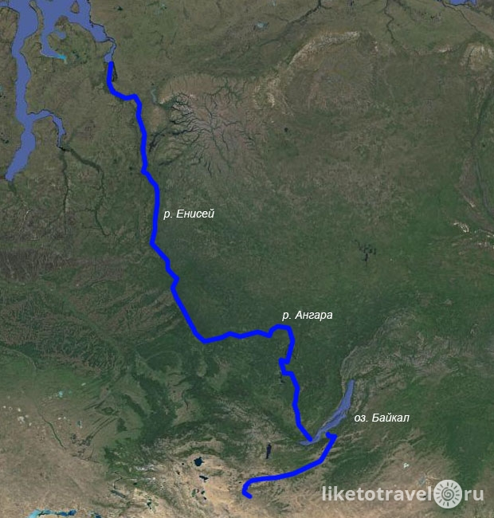

Самые длинные реки мира
Определение длины реки — весьма непростая задача, требующая знания мест, где река начинается и кончается, а также точного измерения длины реки между этими точками. Из-за этого длины многих рек являются приближёнными. Трудности с определением начала реки могут происходить из-за большого числа притоков. Из всех притоков тот, который начинается в наиболее далекой точке от устья, считается началом реки давая реке максимальную суммарную длину. Однако на практике название этого самого удаленного притока часто не совпадает с названием самой реки. Сезонные изменения также усложняют вычисление полной длины. В данном списке приведены длины речных систем, то есть с учётом всех притоков. Устье реки, в свою очередь, часто представляет собой эстуарий, постепенно расширяющийся и открывающийся в океан, что также мешает точному определению конца реки. Некоторые реки, такие как Кубанго, не имеют устья, а постепенно теряют объём и в конце концов испаряются — таким образом их конечные точки также зависят от сезона.
Определение длины реки часто определялось точностью её карты. После освоения фотосъёмки из космоса составлять карты стало легче, но вопросы всё равно остались — длина зависит от выбранного рукава в дельте или от того, как высчитывается длина по озеру.
ТОП-10
10. Конго — Луалаба — Лувуа — Луапула — Чамбеши
Конго — река в Центральной Африке впадающая в Атлантический океан. Протяжённость речной системы Конго — Луалаба — Лувуа — Луапула — Чамбеши — 4700 км (Длина р. Конго — 4374 км). Это самая полноводная и вторая по длине река Африки, вторая река по водности в мире после Амазонки.
Ширина реки в среднем 1,5-2 км, но местами достигает 25 км. Глубина реки достигает значения 230 м — это самая глубокая река в мире.
Конго — единственная крупная река, пересекающая экватор дважды.
9. Амур — Аргунь — Мутная протока — Керулен
Амур — река на Дальнем Востоке в Восточной Азии. Протекает по территории России и границе России и Китая впадая в Охотское море. Длина речной системы Амур — Аргунь — Мутная протока — Керулен равна 5052 км. Длина Амура — 2824 км.
8. Лена — Витим
Лена — река в России, крупнейшая река восточной Сибири, впадает в Море Лаптевых. Длина речной системы Лена — Витим — 5100 км. Длина Лены — 4400 км. Река протекает по территории Иркутской области и Якутии, некоторые из её притоков относятся к Забайкальскому, Красноярскому, Хабаровскому краям, Бурятии и Амурской области. Лена — самая крупная из российских рек, чей бассейн целиком лежит в пределах страны. Замерзает в обратном вскрытию порядке — от низовьев к верховьям.
7. Обь — Иртыш
Обь — река в Западной Сибири. Образуется на Алтае при слиянии Бии и Катуни. Длина Оби — 3650 км. В устье образует Обскую губу и впадает в Карское море.
Иртыш — река в Китае, Казахстане и России, левый, главный, приток Оби. Длина Иртыша составляет 4248 км, что превышает длину самой Оби. Иртыш вместе с Обью — самый протяжённый водоток в России, второй по протяжённости в Азии и седьмой в мире (5410 км).
6. Хуанхэ
Хуанхэ — река в Китае, одна из крупнейших рек Азии. Длина реки — 5464 км. Хуанхэ берёт начало в восточной части Тибетского нагорья на высоте свыше 4000 м, протекает через озёра Орин-Нур и Джарин-Нур, отроги горных массивов Куньлунь и Наньшань. При пересечении Ордоса и Лёссового плато в своём среднем течении образует большую излучину, далее через ущелья Шаньсийских гор выходит на Великую Китайскую равнину, по которой течёт около 700 км до впадения в Бохайский залив Жёлтого моря, формируя в районе впадения дельту.
5. Енисей — Ангара — Селенга — Идэр
Енисей — река в Сибири, одна из величайших рек мира и России. Впадает в Карское море Северного Ледовитого океана. Длина — 3487 км. Длина водного пути: Идэр — Селенга — озеро Байкал — Ангара — Енисей составляет 5550 км.
Ангара — река в Восточной Сибири, самый крупный правый приток Енисея, единственная река, вытекающая из озера Байкал. Протекает по территории Иркутской области и Красноярского края России. Длина — 1779 км.
4. Миссисипи — Миссури — Джефферсон
Миссисипи — главная река крупнейшей речной системы в Северной Америке. Исток расположен в штате Миннесота. Река в основном течёт в южном направлении и достигает длины в 3770 километров, заканчиваясь обширной дельтой в Мексиканском заливе.
Миссури — река в США, крупнейший приток Миссисипи. Длина реки составляет 3767 км. Берёт начало в Скалистых горах, течёт главным образом в восточном и юго-восточном направлениях. Впадает в Миссисипи вблизи города Сент-Луис.
Длина речной системы Миссисипи — Миссури — Джефферсон составляет 6275 км.
3. Янцзы
Янцзы — самая длинная и многоводная река Евразии, третья река в мире по полноводности и по длине. Протекает по территории Китая, имеет длину около 6300 км, площадь бассейна — 1 808 500 км².

2. Нил
Нил — река в Африке, одна из двух величайших по протяжённости рек в мире.
Река берёт начало на Восточно-Африканском плоскогорье и впадает в Средиземное море, образуя дельту. В верхнем течении принимает крупные притоки — Бахр-эль-Газаль (левый) и Ачва, Собат, Голубой Нил и Атбара (правые). Ниже устья правого притока Атбары Нил течёт по полупустыне, не имея притоков на протяжении последних 3120 км.

1. Амазонка
Амазонка — река в Южной Америке, крупнейшая в мире по размерам бассейна, полноводности и длине речной системы. Образуется слиянием рек Мараньон и Укаяли. Длина от главного истока Мараньона 6992 км, от открытого в конце XX века истока Апачета — около 7000 км, от истока Укаяли свыше 7000 км.
Источники:
Википедия
Журнал "Liketotravel"